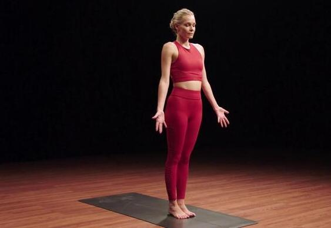
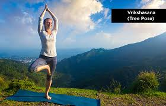

YOG ASAN
Home
Yog Asan 1
Yog Asan 2
Yog Asan 3
Yog Asan 4
Tadasana (Mountain Pose)

INFO OF TADASANA
Go To Mental Fitness
For vedio click here
Vrikshasana (Tree Pose)

INFO OF VRIKSHANA
Go To Mental Fitness
For vedio click here
Svanasana
INFO OF SVANASANA
Go To Mental Fitness
For vedio click here